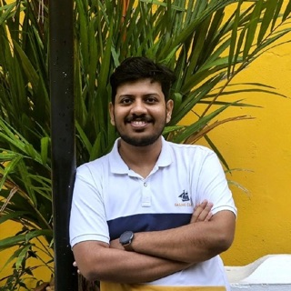

Solution Architect · Java · Angular · Google Cloud
Cibin Mathew Simon.
Full-stack Solution Architect. I design and build cloud-based ERP and eCommerce platforms with Java and Angular, from the first requirement to production.
01 · Career
Built floor by floor
Eight years at Rappit, from associate software engineer to solution architect.
- Associate Software EngineerJun 2018 – Jan 2020
- Software EngineerJan 2020 – Jan 2022
- Team LeadJan 2022 – Feb 2023
- Technical LeadJan 2023 – Mar 2024
- Associate Solution Architect IFeb 2024 – Dec 2025
- Associate Solution Architect IIJan 2026 – now
Before Rappit: B.Tech in Computer Science, SCMS School of Engineering and Technology, 2018.
02 · Current platform
A furniture platform, live in under six months
Sales staff at a European home-furnishing retailer configure custom furniture with customers on an iPad, then sell it on the spot. It replaced a 1990s DOS system. I am the technical architect for a team of eight.
I chose a modular monolith so a small team could ship fast, with module boundaries ready for the planned warehouse and ERP microservices.
- Configuring one product
- ~60 min to 5–8 min
- Suppliers onboarded
- 50+, each with own rules
- Orders
- 100+ a day, 3 stores
- Search
- under 500 ms
03 · 2018 – 2025
Twenty applications through a company split
From 2018 to 2025 I worked on around 20 applications for a global chemical company headquartered in Europe, from HR and research dashboards to shareholder payouts and an IoT data pipeline. The team grew from 4 to 15 engineers.
When the company split in two, I led the migration and chose a plan for every application:
- Rebuilt on the new company's GCP platform, then retired on the old one
- Split into one application for each company
- Duplicated so both companies keep a copy
Along the way I standardised the CI/CD pipelines, reduced cloud costs and mentored developers into team leads.
04 · Toolkit
What I work with
Back end
Java 21, Spring Boot, REST APIs, domain-driven design, modular monolith, event-driven architecture, microservices design, integration patterns, retries and idempotency
Data
PostgreSQL, Elasticsearch, Redis, Firestore, BigQuery, data modelling, data pipelines
Google Cloud
Cloud Run, Cloud Functions, Pub/Sub, Cloud Storage, IAM, IAP, Cloud Armor, Load Balancing, Cloud DNS, Logging and Monitoring, GKE (learning)
Security
OAuth2, Azure AD, Firebase Auth
Delivery
GitLab CI/CD, Docker, 3-week sprints with weekly or biweekly releases
Front end
Angular, TypeScript, progressive web apps
Decisions I stand by
Modular monolith first
The furniture platform had to reach production in about six months with a small team. Clear module boundaries keep a later move to microservices open for the planned warehouse phase.
Behaviour in data, not code
Products, options and validity rules live in data, so a new supplier or product range goes live without a release.
Events at the seams
Stock, analytics and supplier imports listen to Pub/Sub events, so a slow consumer never holds up a sale in the store.
